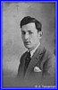
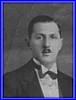
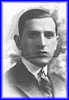

ISRAEL LOPATA'S CHILDREN
click pictures to enter album sections :
Albert & Salomon: FRANCE = 66 pictures
Sarah: POLAND = 23 pictures
Shaya(?): ISRAEL = 3 pictures
Harry, Leon, & Maurice: AUSTRALIA = 43 pictures
Alex: U.S.A. = 28 pictures

ALBERT (Abraham)
SARAH
SHAYA ? (Charles ?)
MAURICE (Moïsche)
SALOMON
DAVID

ALEXANDER (Olek)
HERMANN (Harry)

LEON